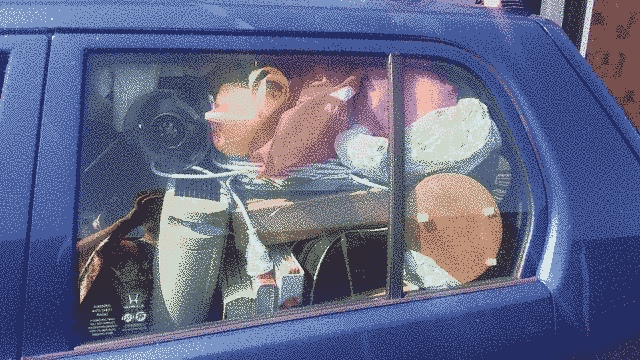

We left this morning. The moon went down as we packed our last belongings up. The street was dew fresh and quiet. The zucchini - self sown - had just opened its first flower, as if to say goodbye.
 We were able to fit more than we thought we would into the car. An additional two washing baskets, a bed roll, sleeping bag and clothes for the next few days without anything on our knees or compromising our frankly capacious leg room. It spells good news for our ability to make the caravan feel roomy.
As I write we are on the ferry, some unknown distance from either island, and uniformly surrounded by fog. Probably a metaphor.
By Tuesday morning we will be in Waimate, and the real journey will begin. In six weeks we plan to empty out, repair, re-clad, insulate, renovate, paint, burnish and furnish the caravan. For those just joining, the first newsletter has a few photos of the exterior.
God knows how it will turn out, and just as well.
The next newsletter will be titled Destroying.
The grace of God be with you all, Giles.